اختبار الأسبوع 3 - الإنتاج والتكاليف
السؤال 1 (درجتان)

الإجابة: يجب أن يكون أكبر من متوسط الإنتاج (must be greater than average product).
الشرح: عندما يتصاعد منحنى متوسط الإنتاج، يجب أن يكون منحنى الإنتاج الحدي فوقه (يسحبه للأعلى).
السؤال 2 (درجتان)

الإجابة: متوسط إنتاجية العمل (average product of labor).
الشرح: عدد المركبات لكل موظف يمثل متوسط إنتاجية العمل ($AP_L = Q/L$). بما أن 18 > 12، فإن $AP_L$ لدى فورد أعلى.
السؤال 3 (درجتان)

الإجابة: متوسط تكلفة متغيرة أقل (lower average variable cost).
الشرح: متوسط التكلفة المتغيرة يرتبط عكسياً بمتوسط الإنتاج ($AVC = w/AP$). بافتراض أجور مماثلة، متوسط إنتاج أعلى يعني تكلفة متغيرة أقل.
السؤال 4 (درجتان)


الإجابة: 26
الشرح: الإنتاج الحدي للعمل ($MP_L$) = $Q(4,3) - Q(3,3) = 148 - 122 = 26$.
السؤال 5 (درجتان)
(بالرجوع للجدول في السؤال 4) 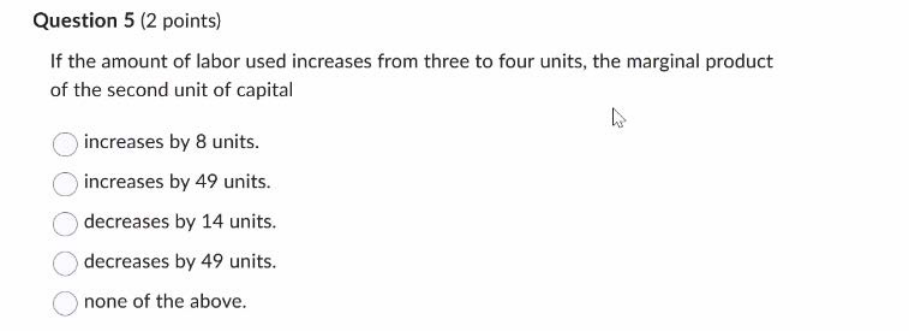
الإجابة: يزداد بمقدار 8 وحدات (increases by 8 units).
الشرح: إنتاجية رأس المال الحدية ($MP_K$ للوحدة الثانية) ارتفعت من 41 ($94-53$) إلى 49 ($112-63$)، أي زيادة بمقدار 8.
السؤال 6 (درجتان)
(بالرجوع للجدول في السؤال 4) 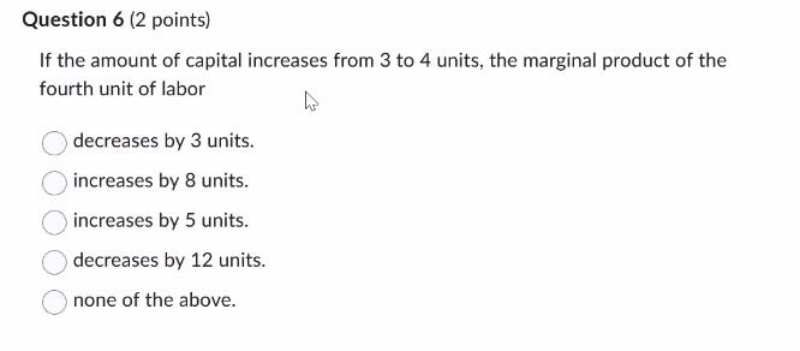
الإجابة: يزداد بمقدار 5 وحدات (increases by 5 units).
الشرح: إنتاجية العمل الحدية ($MP_L$ للوحدة الرابعة) ارتفعت من 26 ($148-122$) إلى 31 ($164-133$)، أي زيادة بمقدار 5.
السؤال 7 (درجتان)

الإجابة: 7.50 دولار ($7.50).
الشرح: التكلفة المتغيرة الإجمالية المحسوبة هي $1050 - 300 = 750$. الخيارات تتطابق مع متوسط التكلفة المتغيرة (7.50)، مما يشير إلى أن السؤال يقصد المتوسط رغم صياغته.
السؤال 8 (درجتان)
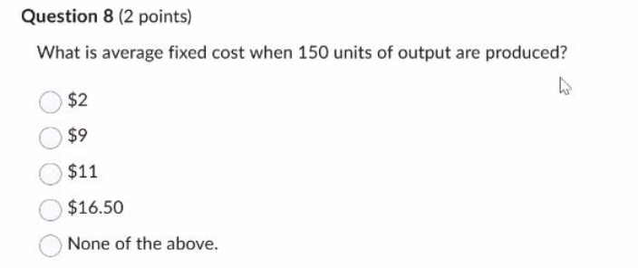
الإجابة: 2 دولار ($2).
الشرح: متوسط التكلفة الثابتة $AFC = FC/Q = 300/150 = 2$.
السؤال 9 (درجتان)

الإجابة: 10.50 دولار ($10.50).
الشرح: التكلفة المتغيرة = $2400 - 300 = 2100$. متوسط التكلفة المتغيرة $AVC = 2100/200 = 10.50$.
السؤال 10 (درجتان)
 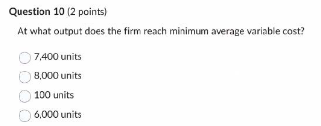
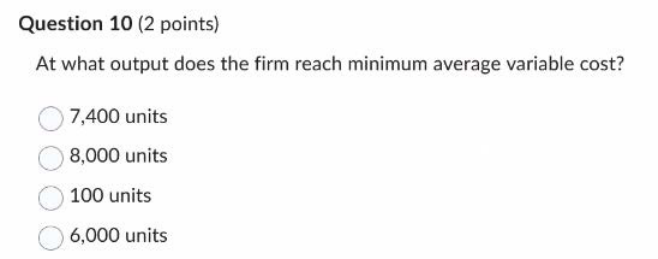
الإجابة: 8,000 وحدة (8,000 units).
الشرح: أدنى متوسط تكلفة متغيرة يحدث عند أقصى متوسط إنتاج (نقطة تقاطع AP و MP). الكمية $Q = L \times AP = 100 \times 80 = 8000$.
السؤال 11 (درجتان)
(بالرجوع للرسم البياني في السؤال 10)

الإجابة: 35 دولار ($35).
الشرح: أدنى متوسط تكلفة متغيرة = $w / Max AP = 2800 / 80 = 35$.
السؤال 12 (درجتان)
(بالرجوع للرسم البياني في السؤال 10) 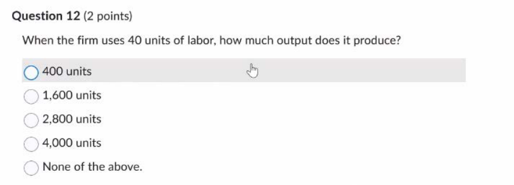
الإجابة: 1,600 وحدة (1,600 units).
الشرح: من الرسم البياني، عند L=40، متوسط الإنتاج (AP) يظهر عند مستوى 40. الكمية $Q = L \times AP = 40 \times 40 = 1600$.
السؤال 13 (درجتان)
(بالرجوع للرسم البياني في السؤال 10)

الإجابة: 35 دولار ($35).
الشرح: من الرسم، الإنتاج الحدي (MP) يقطع مستوى 80 عند استخدام 40 وحدة عمل (في مرحلة التزايد). التكلفة الحدية $MC = w / MP = 2800 / 80 = 35$.
السؤال 14 (درجتان)
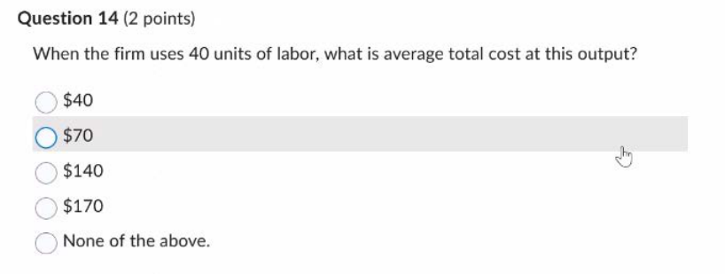
الإجابة: 170 دولار ($170).
الشرح: التكلفة المتغيرة = $40 \times 2800 = 112,000$. التكلفة الإجمالية = $160,000 + 112,000 = 272,000$. متوسط التكلفة الإجمالية = $272,000 / 1600 = 170$.
السؤال 15 (درجتان)

الإجابة: يجب استخدام المزيد من رأس المال وأقل من العمل (should use more capital and less labor).
الشرح: العائد لكل دولار: للعمل $MP_L/P_L = 20/10 = 2$. لرأس المال $MP_K/P_K = 20/2 = 10$. رأس المال أكثر كفاءة لكل دولار، لذا يجب زيادة استخدامه.
السؤال 16 (درجتان)
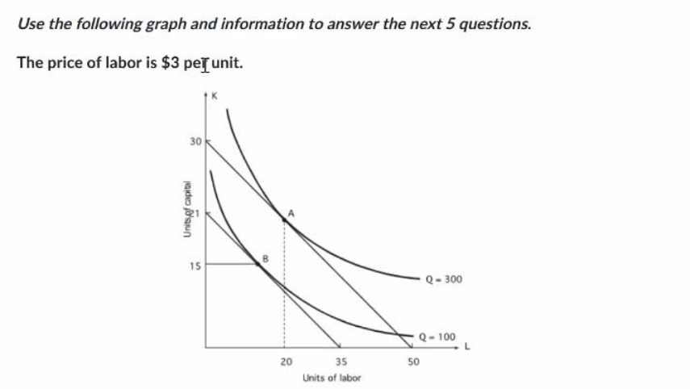 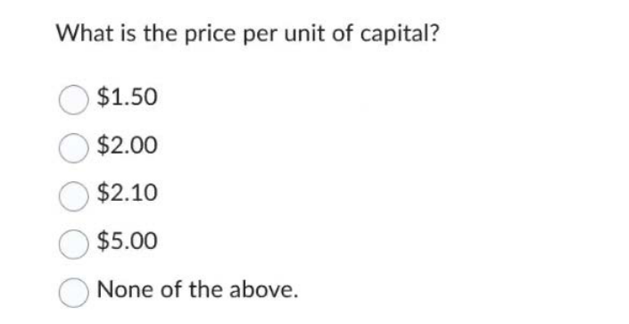
الإجابة: 5.00 دولار ($5.00).
الشرح: ميل خط التكلفة المتساوية = $P_L/P_K = 21/35 = 0.6$. $3/P_K = 0.6 \Rightarrow P_K = 5$.
السؤال 17 (درجتان)
(بالرجوع للرسم البياني في السؤال 16) 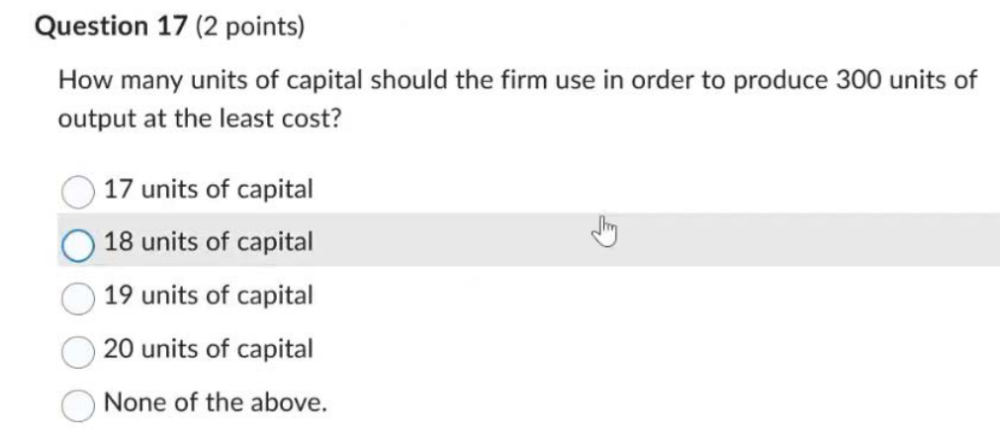
الإجابة: 18 وحدة من رأس المال (18 units of capital).
الشرح: عند نقطة التماس (A) على منحنى الإنتاج 300: معادلة الخط $K = 30 - 0.6L$. عند النقطة A، الكمية L=20 (من الرسم). $K = 30 - 0.6(20) = 18$.
السؤال 18 (درجتان)
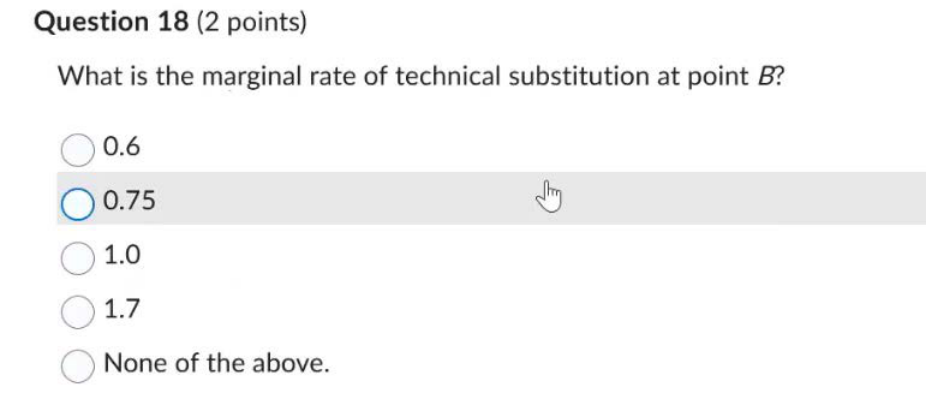
الإجابة: 0.6
الشرح: عند النقطة المثلى B (التماس مع منحنى 100)، المعدل الحدي للإحلال الفني (MRTS) يساوي نسبة أسعار المدخلات ($P_L/P_K$)، وتساوي 0.6.
السؤال 19 (درجتان)

الإجابة: 105 دولار ($105).
الشرح: خط التكلفة المتساوية المار بالنقطة B يتقاطع مع المحور الأفقي عند 35. التكلفة الإجمالية = $P_L \times L_{intercept} = 3 \times 35 = 105$.
السؤال 20 (درجتان)

الإجابة: 10 وحدات عمل (10 units of labor).
الشرح: النقطة B تقع عند تقاطع الخط K=15 وخط التكلفة $K = 21 - 0.6L$. بالحل: $15 = 21 - 0.6L \Rightarrow 0.6L = 6 \Rightarrow L=10$.